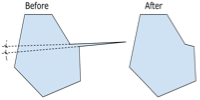

Vector data handling¶
In the Fusion Vector Resource dialog, you can select options for processing your source files:
- Ignore bad features. By default, Fusion reports any issues related to reading features and their attributes from source files and fails to ingest the data. A reported “bad feature” typically means that something is wrong with the vector data file, such as “Empty feature,” “Invalid extents,” “Can’t read feature,” “Unable to get feature,” or “Unable to get attributes.” If you select “Ignore,” Fusion skips the bad features and processes the file.
- Don’t fix invalid geometries. By default, Fusion handles invalid geometry in polygon vector data files as described in the table below. If you select “Don’t fix,” Fusion ingests the vector data as-is, but it might skip the invalid geometry, process it (either correctly or incorrectly), fuse it incorrectly, or fail to fuse it at all. The result might be incorrect.
How Fusion handles geometry
| Example | Description | Fusion handling |
|---|---|---|
| Self-intersecting polygon cycles. For example, “bow tie” figures. | Fusion might skip or might not process correctly. | |
 |
Polygon cycles that are not properly nested. For example, an inner cycle that is partly outside the outer cycle, or cycles that cross each other within a single polygon. | Fusion might skip or might not process correctly. |
| Fusion allows polygon cycles with touching vertices. For example, outer cycle or inner cycle vertices that touch each other. | This geometry is valid. Fusion processes correctly. | |
| Polygon cycle linestrings that have consecutive points within an XY tolerance that is equal to or less than 0.0003m. | Fusion removes the duplicate vertices. | |
|  | Polygon cycles with “spikes.“ A spike is defined as an angle that is equal to or less than 3.15e-3 radians. | Fusion removes the spike and merges the edges. |
| Polygon cycles with “gores.” A gore is defined as an angle that is equal to or less than 3.15e-3 radians. | Fusion removes the gore and merges the edges. | |
 |
Polygon cycles with zero area. If the polygon is a triangle with an angle that is less than 3.15e-3 radians, Fusion treats it as a spike and removes it. After the spike is removed, the result is a polygon with zero area. | Fusion removes the polygon with zero area. |